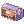
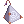
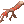

Endless Cellar
| This quest or instance is repeatable. | ||
|---|---|---|
| Cooldown | Tickets Available | |
|
3 days and 20 hours |
Solo: No Limit | Party: No Limit |
Endless Cellar is a custom Instance dungeon in NovaRO. It mimics the setup of the official Endless Tower instance, but contains a completely different set of mobs.
Overview
| Requirements | |
|---|---|
| Base Level: | 50 |
| Starting Point: | e_tower 70/116 |
| Items: | - |
| Rewards | |
| Experience: | varies |
| Items: |  1 Jewelry box  1 Poring Box  1 Bloody Branch  1 Old Card Album 1 Old Card Album
|
| Others: | MVP Battles |
The endless cellar comprises of 100 floors, each one filled with a set of mobs. Players will need to kill all mobs inside a floor to open the gate to the next one. The further down you go, the more difficult the mobs will be. Every 5th floor is a special floor, which contains an MVP monster.
To enter the Endless Cellar, use the Warper NPC. Select Instances, Endless Tower(Cellar). The entrance is on the left side of the island; an NPC called "Cellar Protection Stone". You must be in a Party to enter this instance.
Floors
| Floors 1 - 25 | |
|---|---|
| Floor Number | Monster Spawn |
| Floor 1 | 20 Fabre
10 Picky 10 Picky |
| Floor 2 | 15 Peco Peco
15 Muka |
| Floor 3 | 15 Coco
15 Caramel 15 Horn |
| Floor 4 | 10 Grand Peco
10 Willow 10 Wolf 10 Creamy |
| Floor 5 | 25 Greatest General
1 Eddga |
| Floor 6 | 15 Spore
10 Black Mushroom 10 Red Mushroom 15 Poison Spore |
| Floor 7 | 20 Hunter Fly
3 Dragon Fly 20 Orc Zombie 20 Zenorc |
| Floor 8 | 20 Golem
20 Metaller 20 Magnolia |
| Floor 9 | 5 Incubus
20 Ghoul 20 Marionette |
| Floor 10 | 15 Deviruchi
15 Nightmare 1 Dracula |
| Floor 11 | 10 Nine Tail
20 Munak 10 Bongun |
| Floor 12 | 1 Bloody Murderer
30 Quve 30 Lude |
| Floor 13 | 15 Whisper
20 Hylozoist 30 Disguise |
| Floor 14 | 10 Wanderer
20 Gibbet 20 Dullahan |
| Floor 15 | 15 Bloody Murderer
20 Loli Ruri 1 Lord of Death |
| Floor 16 | 25 Smokie
25 Giearth |
| Floor 17 | 25 Skeleton Worker
20 Myst |
| Floor 18 | 25 Martin
25 Raggler |
| Floor 19 | 25 Myst Case
7 Chepet 25 Cruiser |
| Floor 20 | 30 Santa Poring
1 Stormy Knight |
| Floor 21 | 30 Fur Seal
30 Sea Otter |
| Floor 22 | 15 Stone Shooter
25 Wootan Shooter 25 Wootan Fighter |
| Floor 23 | 30 Geographer
30 Mantis |
| Floor 24 | 20 Wood Goblin
20 Les 10 Mavka |
| Floor 25 | 20 Baba Yaga
10 Uzhas 1 Gopinich |
| Floors 26 - 50 | |
|---|---|
| Floor Number | Monster Spawn |
| Floor 26 | 30 Jaguar
30 Toucan |
| Floor 27 | 50 Curupira
10 Dokebi 10 Savage |
| Floor 28 | 30 Headless Mule
20 Nightmare Terror 10 Nightmare |
| Floor 29 | 15 Marin
20 Garm Baby 15 Myst Case |
| Floor 30 | 15 Sasquatch
20 Marine Sphere 1 Garm |
| Floor 31 | 20 Roda Frog
20 Thara Frog 15 Poison Toad 5 Toad |
| Floor 32 | 15 Dragon Tail
30 Lunatic 20 Spring Rabbit 5 Eclipse |
| Floor 33 | 20 Harpy
20 Rotar Zairo 20 Steam Goblin |
| Floor 34 | 10 Marina
25 Piranha 30 Iara |
| Floor 35 | 30 Siorava
30 Red Eruma 1 Boitata |
| Floor 36 | 30 Stainer
Brilight |
| Floor 37 | 25 Medusa
15 Neraid 10 Pest |
| Floor 38 | 25 Argiope
25 Comodo |
| Floor 39 | 30 Panzer Goblin
25 Anolian 25 Alligator |
| Floor 40 | 20 Tri Joint
25 Megalith 1 Tao Gunka |
| Floor 41 | 20 Savage
25 Gullinbursti |
| Floor 42 | 25 Requiem
25 Zerom 10 Skeleton General |
| Floor 43 | 30 Dokebi
15 Am Mut |
| Floor 44 | 20 Naga
30 Banaspaty 30 Butoijo |
| Floor 45 | 15 Cendrawasih
1 Leak |
| Floor 46 | 30 Kaho
30 Blazzer |
| Floor 47 | 10 Driller
20 Horong 20 Minorous |
| Floor 48 | 20 Dustiness
20 Porcellio 20 Pitman |
| Floor 49 | 10 Mineral
10 Waste Stove 10 Noxious 10 Venomous 10 Teddy Bear |
| Floor 50 | 20 Cobalt Mineral
1 RSX-0806 |
| Floors 51 - 75 | |
|---|---|
| Floor Number | Monster Spawn |
| Floor 51 | 15 Galion
15 Hill Wing 15 Stapo |
| Floor 52 | 30 Roween
30 Drosera |
| Floor 53 | 30 Siroma
70 Iceicle |
| Floor 54 | 30 Snowier
20 Ice Titan |
| Floor 55 | 30 Gazeti
1 Ktullanux |
| Floor 56 | 35 Frus
35 Skogul |
| Floor 57 | 10 Garden Keeper
15 Garden Watcher 1 Piamette |
| Floor 58 | 20 One-horn Scaraba
20 Two-horn Scaraba |
| Floor 59 | 20 Antler Scaraba
20 Rake Scaraba |
| Floor 60 | 20 One-Horn Scaraba Egg
20 Two-Horn Scaraba Egg 20 Antler Scaraba Egg 20 Rake Scaraba Egg 1 Queen Scaraba |
| Floor 61 | 30 Zombie Master
20 Dark Priest |
| Floor 62 | 20 Zombie Prisoner
20 Zombie Slaughter 20 Hell poodle |
| Floor 63 | 10 Necromancer
20 Ragged Zombie 15 Flame Skull |
| Floor 64 | 30 Aliot
30 Aliza |
| Floor 65 | 30 Alicel
30 Constant 1 Kiel D-01 |
| Floor 66 | 30 Luciola Vespa
40 Naga 10 Cornus |
| Floor 67 | 25 Nepenthes
25 Pinguicula 25 Dark Pinguicula |
| Floor 68 | 10 Ancient Worm
50 Centipede Larva 30 Centipede |
| Floor 69 | 10 Bradium Golem
30 Hillslion 30 Tatacho |
| Floor 70 | 5 Cornus
5 Bradium Golem 10 Hillslion 1 Hardrock Mammoth 2 Tendrillion |
| Floor 71 | 20 Magmaring
20 Knocker 15 Imp |
| Floor 72 | 20 Mineral
25 Cobalt Mineral 25 Heavy Metaling |
| Floor 73 | 25 Archdam
25 Apocalips |
| Floor 74 | 25 Hell Apocalips
25 Zakudam |
| Floor 75 | 10 Photon Cannon
10 Photon Cannon 10 Photon Cannon 10 Photon Cannon 1 Vesper |
| Floors 76 - 100 | |
|---|---|
| Floor Number | Monster Spawn |
| Floor 76 | 35 Gremlin
35 Hodremlin |
| Floor 77 | 15 Banshee Master
25 Banshee |
| Floor 78 | 15 Beholder Master
20 Beholder 15 Seeker |
| Floor 79 | 25 Aunoe
25 Fanat |
| Floor 80 | 5 Beholder Master
5 Banshee Master 1 Gloom Under Night |
| Floor 81 | 25 Small Octopus
15 Swordfish |
| Floor 82 | 20 Sropho
20 Sedora |
| Floor 83 | 35 Pot Dofle
35 King Dramoh |
| Floor 84 | 15 Kraken Leg
20 Octopus Leg |
| Floor 85 | 10 Sropho
10 Sedora 1 Kraken |
| Floor 86 | 20 Bradium Golem
15 Lava Golem 10 Stalactic Golem |
| Floor 87 | 20 Rata
20 Duneyrr |
| Floor 88 | 5 Dark Priest
25 Rhyncho 15 Phylla |
| Floor 89 | 25 Ancient Tree
25 Dark Shadow |
| Floor 90 | 15 Aqua Elemental
15 Bradium Golem 1 Nightmare Baphomet 1 Nightmare Amon Ra |
| Floor 91 | 15 Parus
15 Little Fatum 15 Miming |
| Floor 92 | 35 Pom Spider
35 Angra Mantis |
| Floor 93 | 30 Mangukulam
30 Engkanto |
| Floor 94 | 15 Incarnation of Morroc
15 Incarnation of Morroc 15 Incarnation of Morroc 15 Incarnation of Morroc |
| Floor 95 | 20 Cenere
1 Wounded Morroc |
| Floor 96 | 25 Remover
20 Gemini-S58 25 Frus 10 Byorgue |
| Floor 97 | 10 Gold One-Horn Scaraba
10 Gold Two-Horn Scaraba 15 Gold One-Horn Scaraba Egg 15 Gold Two-Horn Scaraba Egg |
| Floor 98 | 10 Gold Antler Scaraba
10 Gold Rake Scaraba 15 Gold Antler Scaraba Egg 15 Gold Rake Scaraba Egg |
| Floor 99 | 2 Randel
2 Flamel 2 Celia 2 Chen 2 Gertie 2 Alphoccio 2 Trentini |
| Floor 100 |
1 Poring |
|
1 Gold Queen Scaraba | |
1 of the following:
| |
|
1 Time Holder | |
See also
- Instances (Memorial Dungeons)
- Endless Tower on iROwiki